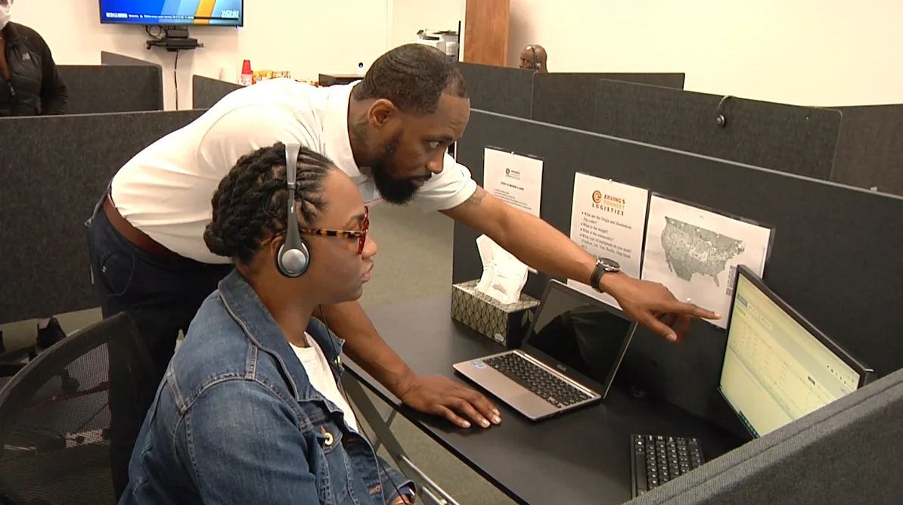

Transportation Business
Planning, brokerage, trucking operations, workflow, training, and growth considerations.
Advisory support at the intersection of business operations, transportation, training, and growth.

Planning, brokerage, trucking operations, workflow, training, and growth considerations.
Clarifying offers, priorities, customer paths, processes, and growth objectives.
Turning subject-matter knowledge into clearer programs, learning experiences, and educational products.
Communication, accountability, change, conflict, and practical professional development.
Consulting is most useful when the engagement begins with a concrete business problem: a process that needs structure, a training program that needs direction, a transportation venture that needs clarity, or a team that needs a stronger operating rhythm.
The first conversation is used to determine scope, fit, and whether coaching, consulting, or training is the better path.
Start the conversationComplete the details for this service below. Your submission is saved as a dedicated application for review.
General questions? Contact us